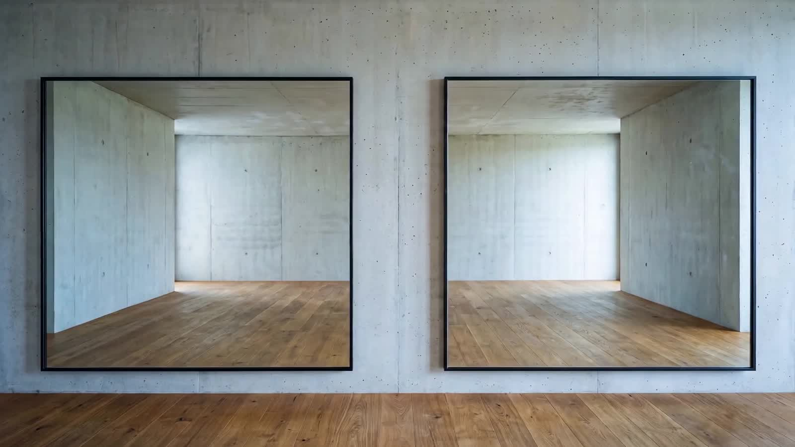

Намальовано на справжньому кадрі, на зміряних прямокутниках дзеркал — ліве 5.0–44.0%, праве 55.7–94.6%, обидва по вертикалі 17.4–83.2%. Рамок і плашок немає ніде: тільки м'яка тінь під текстом і згасання по краю, вписані всередину дзеркала. Нічого не продається: ні цін, ні кошика, ні «замовити».
